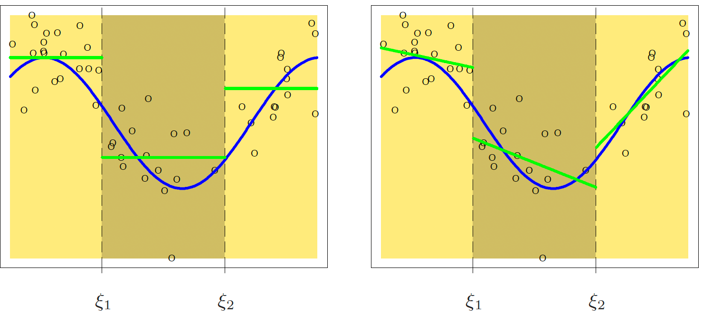

Splines and General Additive Models 〰️
MSSC 6250 Statistical Machine Learning
U.S. Birth Rate from 1917 to 20031

A Polynomial Regression Provide a Poor Fit


Piecewise Polynomials: 3 knots at 1936, 60, 78
\[y=\begin{cases} \beta_{01} + \beta_{11}x+ \epsilon & \text{if } x < 1936\\ \beta_{02} + \beta_{12}x+\epsilon & \text{if } 1936 \le x < 1960 \\ \beta_{03} + \beta_{13}x+\epsilon & \text{if } 1960 \le x < 1978 \\ \beta_{04} + \beta_{14}x+\epsilon & \text{if } 1978 \le x \end{cases}\]

Any issue of piecewise polynomials?
Piecewise Linear to Continuous Piecewise Linear
How do we turn the piecewise regression of degree 1 into a regression spline?
\[y=\begin{cases} \beta_{01} + \beta_{11}x+ \epsilon & \quad \text{if } x < 1936\\ \beta_{02} + \beta_{12}x+\epsilon & \quad \text{if } 1936 \le x < 1960 \\ \beta_{03} + \beta_{13}x+\epsilon & \quad \text{if } 1960 \le x < 1978 \\ \beta_{04} + \beta_{14}x+\epsilon & \quad \text{if } 1978 \le x \end{cases}\]
- For splines of degree 1, we require continuous piecewise linear function
\[\begin{align} \beta_{01} + \beta_{11}1936 &= \beta_{02} + \beta_{12}1936\\ \beta_{02} + \beta_{12}1960 &= \beta_{03} + \beta_{13}1960\\ \beta_{03} + \beta_{13}1978 &= \beta_{04} + \beta_{14}1978 \end{align}\]

splines::bs()

The function is continuous everywhere, also at knots \(\xi_1, \xi_2,\) and \(\xi_3\), i.e. \(f_{k}(\xi_k^-) = f_{k+1}(\xi_k^+)\).
Linear everywhere except \(\xi_1, \xi_2,\) and \(\xi_3\).
Has a different slope for each region.
Linear Splines Basis Functions

Cubic Splines

Spline and Natural Spline Comparison
- Cubic Spline vs. Natural Cubic Spline with the same degrees of freedom 6.

smooth.spline()
smooth.spline(x, y, df, lambda, cv = FALSE)-
cv = TRUEuse LOOCV;cv = FALSEuse GCV
fit <- smooth.spline(birthrates$Year, birthrates$Birthrate)
fit$df[1] 60.8smooth.spline()
fit <- smooth.spline(birthrates$Year, birthrates$Birthrate, df = 15)